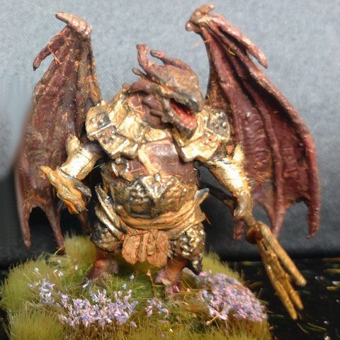

Le prix du démon Epharel

Ce qui s'est passé
- Azog a achevé l'invocation d'Epharel et, avec son aide, a volé l'auréole de Cloaphilès. Silenna et Cloaphilès ont été tués avec son aide.
- Plus tard, Azog a raté une invocation d'Epharel (erreur de prononciation) et a créé une distorsion temporelle.
Questions ouvertes
- Que demande Epharel en échange de son aide ?